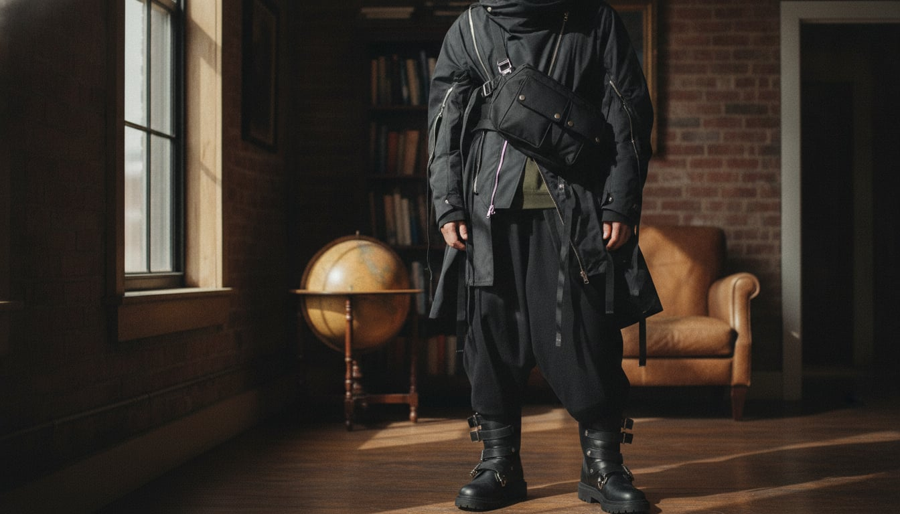
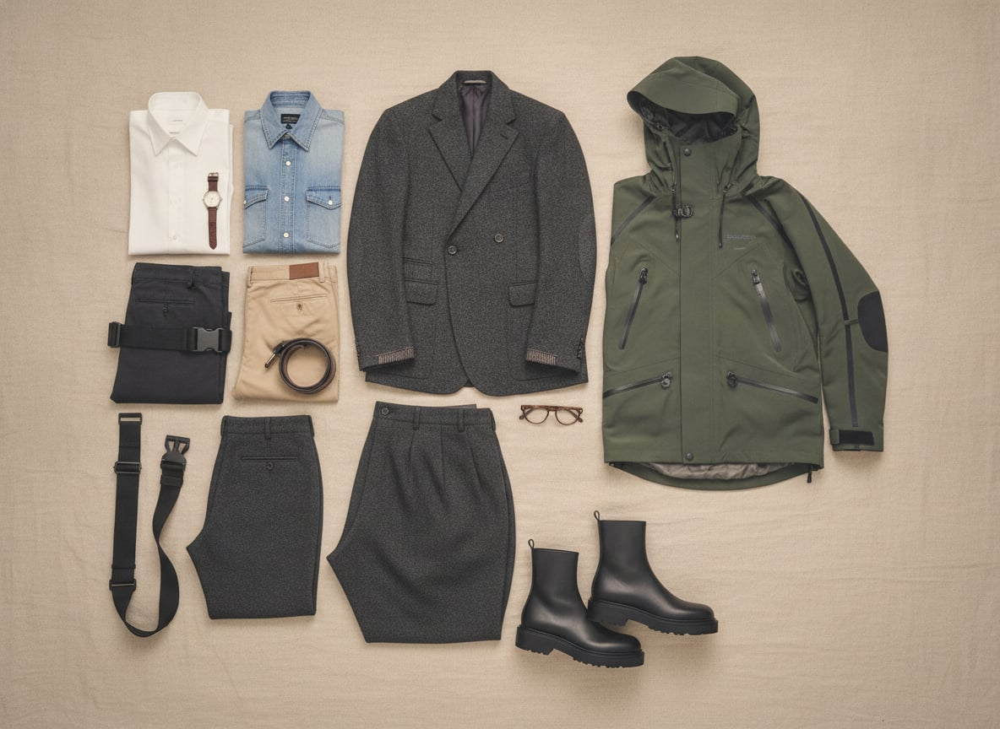

The wardrobe's intellectual roots are in Paris in the early 1980s, when Rei Kawakubo's Comme des Garçons and Yohji Yamamoto showed collections of black, asymmetrical, deliberately unfinished-looking garments that critics, unable to process what they were seeing, called “Hiroshima chic” — a reaction later understood as one of the most important ruptures in twentieth-century fashion. Around the same time, a cluster of Belgian designers known as the Antwerp Six were doing something similarly conceptual with tailoring itself, pulling suits apart and reassembling them on different logic. Decades later, the same appetite for reinvention found a new outlet in techwear — Acronym and Arc'teryx Veilance fusing military and outdoor performance fabric with an urban, almost architectural silhouette.
What connects deconstructed Japanese tailoring to a Gore-Tex hardshell with fifteen zippers is a shared premise: that a garment's form should be interrogated, not inherited. Asymmetry, exposed seams, straps and hardware that reference function without quite performing it, a near-total monochrome palette that refuses to distract from silhouette — these aren't errors, they're arguments.
It's a style for people who find tradition a little suspicious as a justification — who want to know why a jacket looks the way it does, and aren't satisfied by “it always has.” There's real intellect in it, and a taste for discomfort in the good sense: clothes that make people look twice, and then ask a question you're pleased to have an answer for.
Rei Kawakubo and Yohji Yamamoto shocked Paris in 1981 with jackets that looked unfinished on purpose — raw hems, asymmetric closures, seams left exposed — arguing that a garment's construction could be its content, not just its means.
An approximation of the silhouette in commercial fabric.
Shop this →Genuine asymmetric construction from designers steeped in the tradition.
Shop this →The two houses that originated the vocabulary this entire wardrobe speaks.
Shop this →Acronym's Errolson Hugh spent the 1990s and 2000s fusing military and outdoor performance fabric with an architectural, urban silhouette, treating a jacket's hardware — straps, zips, magnetic closures — as expressive rather than purely functional.
Genuine technical fabric, minimal design language.
Shop this →Real hardware and construction detail, wearable daily.
Shop this →Where most trousers are cut to skim the leg, this wardrobe's are cut to fall — oversized, tapered at the ankle, built to pool and drape rather than hold a line, a direct rejection of the sharp trouser tailoring taught for a century prior.
The silhouette at an accessible price, in a lighter fabric.
Shop this →An all-black, minimally branded boot — often with an exaggerated sole — became this wardrobe's footwear default because color would undercut the outfit's monochrome argument entirely.
Sculptural lasts and treated leather most mass brands don't attempt.
Shop this →The exaggerated-sole silhouette most associated with the whole aesthetic.
Shop this →Utilitarian hardware — straps, buckles, D-rings — moved from military and climbing equipment into this wardrobe as pure signifier, referencing function it usually isn't actually performing.
The silhouette without the specific hardware language.
Shop this →Real leather or technical fabric with considered hardware.
Shop this →Technical fabrics in lighter weights, still monochrome, still architecturally cut -- the silhouette doesn't loosen just because it's warm, the materials just get more breathable.
Layering technical shells over the deconstructed jacket, still all black, with the hardware now serving an actual thermal purpose rather than a purely visual one.
The technical shell was already built for exactly this -- genuinely waterproof, seam-taped, no umbrella required or wanted. This is the one weather condition this wardrobe was always ready for.
A heavier technical parka replaces the usual jacket, boots get genuinely aggressive tread, and the whole silhouette gets more sculptural rather than simply puffier.
Formality here means more conceptual, not more traditional -- an even more deconstructed jacket, asymmetry pushed further, still resolutely avoiding anything that reads as a normal suit.
Tokyo and Antwerp for the design, Berlin for the nightlife, and post-industrial cities more generally — the more derelict the architecture, the better.
Susan Sontag, Rei Kawakubo interviews wherever they can be found, and architecture and design monographs read as closely as novels.
Aphex Twin, industrial and noise records, and whatever's currently being played at the one club that still matters in whichever city he's in.
Concrete, exposed structure, furniture chosen for form over comfort, and a near-total absence of color, broken by one deliberately jarring object.
Gallery openings, a genuine interest in architecture as a spectator sport, and a habit of rearranging the furniture just to see if a room can say something different.